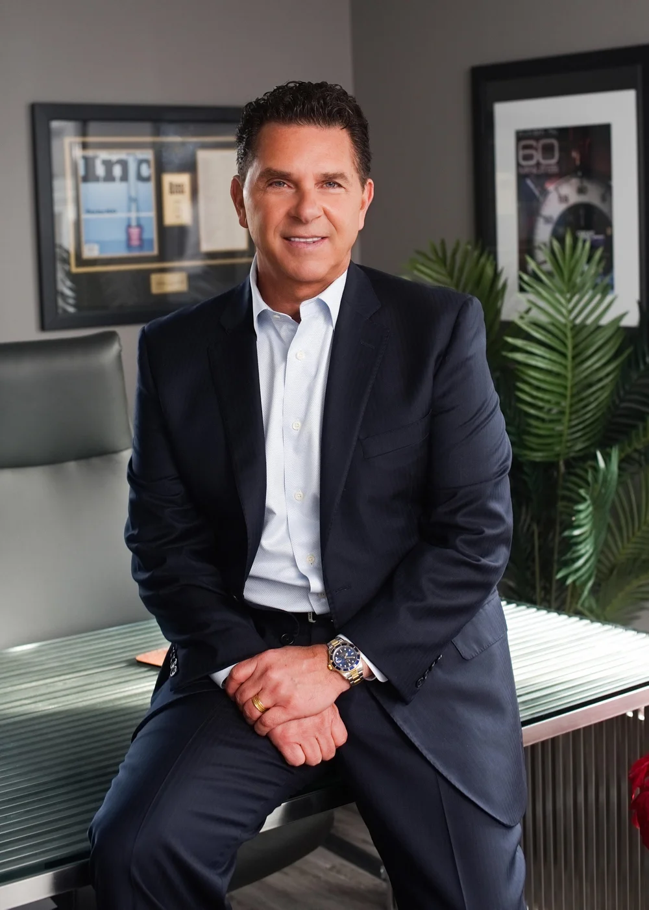

Chris Kuselias
Founder & ChairmanChris has spent three decades building and running companies: launching ventures, employing thousands of families, and doing the unglamorous work of getting people to change how they operate. He has been profiled on 60 Minutes, CNN, FOX, ABC and NBC.